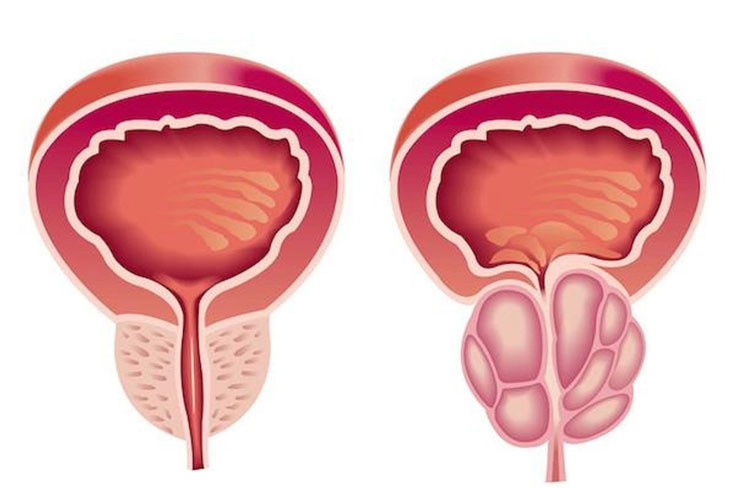
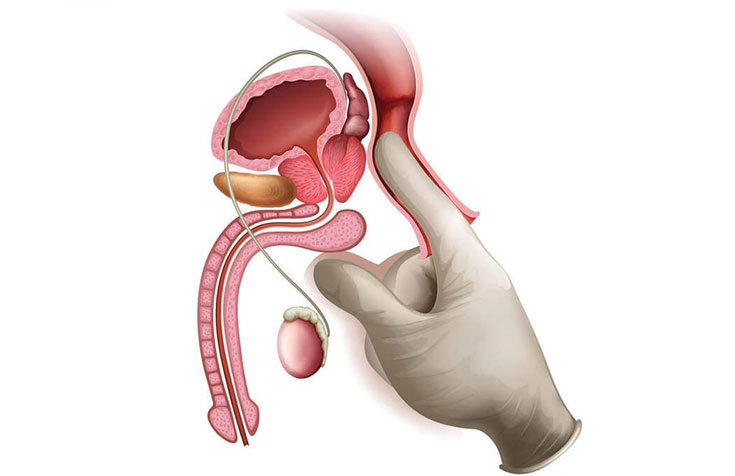

Cómo curar la prostatitis y mantenerse saludable
La prostatitis es uno de los problemas más graves de los hombres. La inflamación aparece ya después de tres meses de fugas de orina en forma crónica. En el grupo de riesgo hay hombres mayores de 25 años. Cómo prevenir o curar la prostatitis, le contará el especialista del Centro Urológico Brandon Alfonso.
Hola, doctor. ¿Es cierto que puede tener prostatitis a los 20 años?
- ¡Hola! Sí, la enfermedad puede manifestarse a cualquier edad. Las relaciones sexuales sin protección, el estrés, la actividad sexual irregular o un sistema inmune deprimido desarrollan la enfermedad inflamatoria de la próstata.
¿Cuáles son los síntomas de la prostatitis?
- Uno de los primeros es el dolor en la parte inferior del abdomen después de la eyaculación. Y después aparece el deseo frecuente de ir al baño y el dolor al orinar, malestar en la entrepierna, sudoración, irritabilidad, disminución de la libido.
Próstata normal e inflamada
¿Qué sucede si no se trata la inflamación?
- Muchos hombres tienen miedo de ir a una cita debido a la inspección. El examen rectal del dedo de la próstata y el paso de las pruebas es un procedimiento desagradable, pero muy importante. Por lo tanto, los hombres esperan a que los síntomas vayan por sí solos. Sin tratamiento, la prostatitis se vuelve crónica rápidamente. Las complicaciones posteriores pueden ser diferentes: inflamación, uretritis, absceso, quiste, piedras en la glándula prostática, disfunción eréctil y desarrollo tumoral. Estas consecuencias se tratan en el 87% de los casos sólo por cirugía e instalación de catéter durante dos meses. Es importante no poner su cuerpo en un estado crítico
¿Es tratable la prostatitis crónica?
- Con el tratamiento adecuado, se logra una remisión persistente durante muchos años. Especialmente si renuncia a los malos hábitos, sigue una dieta y hace ejercicio las posibilidades de recuperación aumentarán al 100%
¿Qué medicamentos se prescriben para tratar la prostatitis?
Antibióticos, antiinflamatorios, bloqueadores alfa y esteroides se prescriben con precaución y bajo la estricta supervisión del médico. La toma incorrecta causa resistencia hacia los microorganismos. Esto conduce a una inflamación bacteriana incontrolada.
Además de las recetas medicas, se prescribe a menudo el masaje de próstata. Este es un procedimiento complicado, pocos especialistas lo hacen bien. Por lo tanto, el efecto del mismo es casi nulo.
Ahora mismo, la fitomedicina está haciendose más popular. Mi práctica ha demostrado que esta es la forma más eficaz de tratar la prostatitis hasta la fecha.
Masaje de próstata
¿Qué es la fitomedicina y por qué es popular?
- La fitoterapia se basa en medicamentos naturales sin esteroides, hormonas y antibióticos. El uso de componentes naturales con un importante conjunto de vitaminas y oligoelementos no dañan otros sistemas del cuerpo. Durante la prostatitis, la fitomedicina mejora más eficazmente las secreciones de la glándula, reduce el dolor, la inflamación y mejora la función sexual. Se puede tomar en cualquier etapa de la enfermedad y el efecto persiste incluso después de terminar el tratamiento.
¿Es posible tomar estos medicamentos sin una receta médica?
- Muchos hombres son tratados con antibióticos, esteroides y hormonas sin receta. Un uso incontrolado empeora la situación. Las consecuencias pueden ser impredecibles. Desde la disfunción eréctil, hasta un fracaso hormonal con posible desarrollo de tumor. Los fitomedicamentos se pueden tomar sin receta del médico. No dañan la salud, por el contrario, ayudan a curar las comorbilidades. Por ejemplo, el compuesto para la prostatitis también mejora la potencia y fortalece el sistema inmune
¿Cuánto dura el tratamiento con los fitomedicamentos?
- La terapia convencional incluye medicación y masaje de próstata o fisioterapia. Los antibióticos se beben durante dos semanas. Los esteroides y los medicamentos hormonales al menos un mes. La recuperación de la microbiota y la inmunidad toma de dos a seis meses. El curso de la medicina herbal es de aproximadamente un mes. Incluye un efecto inmediato antiinflamatorio y restaurador. En la primera semana, se alivia la inflamación. Para la segunda, la próstata pasa aun tamaño normal y se van los síntomas perturbadores. La tercera y cuarta semana es una etapa de fijación. La inmunidad se restaura, el cuerpo se recupera y la prevención de la re-infección está en marcha. Este efecto rápido se logra a través de extractos naturales y el complejo vitamínico adecuado.
¿Puede recomendar medicamentos para el tratamiento en casa?
En mi lista de favoritos, el lugar de honor lo tiene el
¿Usa el en su práctica?
Por supuesto. Permite curarse más rápido y desarrolla inmunidad a las bacterias. La próstata disminuye ya en la primera semana sin medicamentos adicionales, masajes o dieta especial. En un curso se alivia el dolor, malestar, deseo frecuente de orinar y problemas sexuales
Gracias por una entrevista tan detallada. Queda por preguntarle si ¿la prevención de la prostatitis es necesaria?
- Me alegra responder a sus preguntas. Para los síntomas no vuelvan y no se desarrole el adenoma la prevención es obligatoria. Se puede llevar a cabo 2-3 veces al año. Si tiene sospechas, ¡no pierda el tiempo! El tratamiento oportuno es la clave para una pronta recuperación
PATHOLOGY
- Imagen de la biopsia de fusión de próstata
- Aumento del pene
- Reducción del deseo sexual
- Enfermedades de la próstata
- Tratamiento de enfermedades de transmisión sexual
- Eyaculación precoz - síntomas y causas
- ¿Qué es la fimosis?
- Curvatura del pene.
- La infertilidad en la pareja
- Cirugía de próstata con láser verde
- Orquitis y epididimitis
- Cáncer de riñón, síntomas, causas y tratamiento